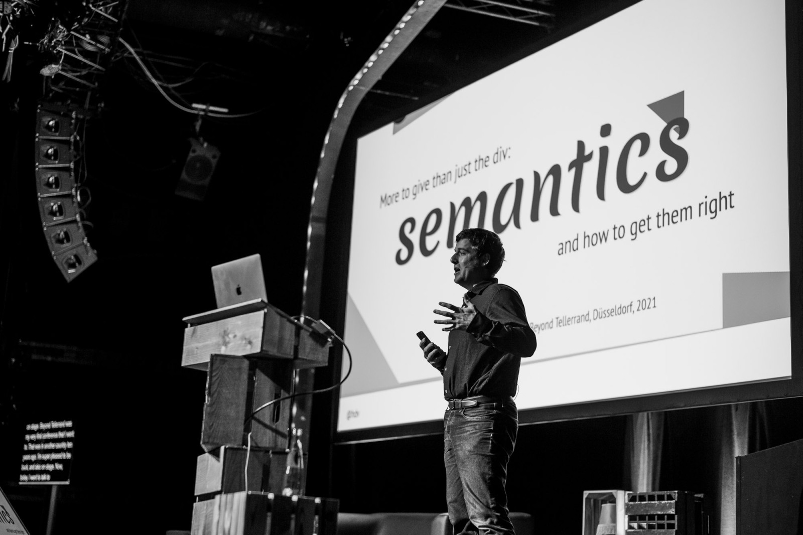

Blog
Speaking
About me
Contact
Hablemos!

At dotCSS in Paris(2019). Photo by Thomas Decamps
#1 Mostly on Mastodon
#2 My experience at Modern Frontends Live →
#3 2022 in review →
#4 Do we need an Interop for assistive technologies? →
#5 Is this the last exodus from Twitter? →